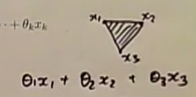
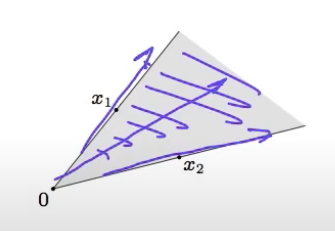
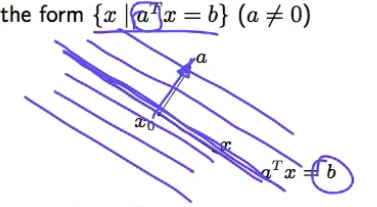
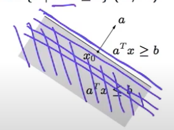

Lecture 2 - Convex Sets
Contents
Lecture 2 - Convex Sets¶
Topics¶
affine and convex sets
some important examples
operations that preserve convexity
intersection of two sets
sum of two sets
combine different sets to make interesting sets
generalized inequalities
separating and supporting hyperplanes
dual cones and generalized inequalities
Affine set¶
line through \(x_{1}\), \(x_{2}\) : all points
linear combination of \(x_{1}\) and \(x_{2}\) that add upto 1 $\( x = \theta x_{1} + (1-\theta)x_{2}\space \space \space \) (\(\theta \in \mathbb R \)$
if \(\theta = 1, x = x_1\)
if \(\theta = 0, x = x_2\)
if \(\theta = 0.5,\) x lies in between \(x_{1}\) and \(x_{2}\)
if \(\theta < 0,\) x lies beyond \(x_{2}\)
if \(\theta > 1,\) x lies beyond \(x_{1}\)
if \(0 \le \theta \le 1,\) x lies between the line segment \(x_{1}\) and \(x_{2}\)
solution set of linear equations {x | Ax = b} is an affine set
conversely, for every affine set it can be expressed as solution set of system of linear equations
If \(Ax_1 = b\) and \(Ax_2 = b\), then line passing through \(x_{1}\) and \(x_{2}\) satisfies the equation: $\( \begin{equation} \\ \begin{aligned} \\ Ax &= A(\theta x_{1} + (1-\theta)x_{2}) \\ &= \theta A x_{1} + (1-\theta)A x_{2} \\ &= \theta b + (1-\theta) b \\ &= b \\ \end{aligned} \\ \end{equation} \)$
Convex set¶
\(x = \theta x_{1} + (1-\theta)x_{2}\space \space \space (0 \le \theta \le 1)\) and both the coefficients must add upto 1
That means that an affine set is, in fact, a convex set, because an affine set contains the entire line through \(x_{1}\) and \(x_{2}\)
All the points between the line segment must lie within the set
Convex combination and convex hull¶
convex combination
any point x of the form
\(x = \theta_{1}x_{1} + \theta_{2}x_{2} + ... + \theta_{k}x_{k}\)
with \(\theta_{1} + ... + \theta_{k} = 1, \theta_{i} \ge 0\)
convex hull
set of all convex combinations of some points in S
if we vary these 3 points so that they satisfy the constraint, the set will have all the combinations inside the boundary

\(\tiny{\text{YouTube-Stanford-EE364A-Jacob Mattingley}}\)
Convex cone¶
conic (nonnegative) combination: of \(x_{1}\) and \(x_{2}\) of the form
\(x = \theta_{1}x_{1} + \theta_{2}x_{2} \)
with \(\theta_{1} \ge 0, \theta_{2} \ge 0 \)

\(\tiny{\text{YouTube-Stanford-EE364A-Prof Stephen Boyd}}\)
convex cone: all the conic combinations of points in the set
Hyperplanes and halfspaces¶
Hyperplane
is the solution set of linear combination of this constraint
set of form \(\{x|a^Tx=b\}\), where \(a \ne 0\)
a is normal to the hyperplane
if you vary b, you get different sets of plane
hyperplanes are affine and convex

\(\tiny{\text{YouTube-Stanford-EE364A-Prof Stephen Boyd}}\)
Halfspace
is the solution set of single linear inequality
set of form \(\{x|a^Tx \le b\}\), where \(a \ne 0\)
a is an outward normal to the plane
halfspaces are convex and not affine

\(\tiny{\text{YouTube-Stanford-EE364A-Prof Stephen Boyd}}\)
Euclidean balls and ellipsoids¶
Euclidean ball
ellipsoid